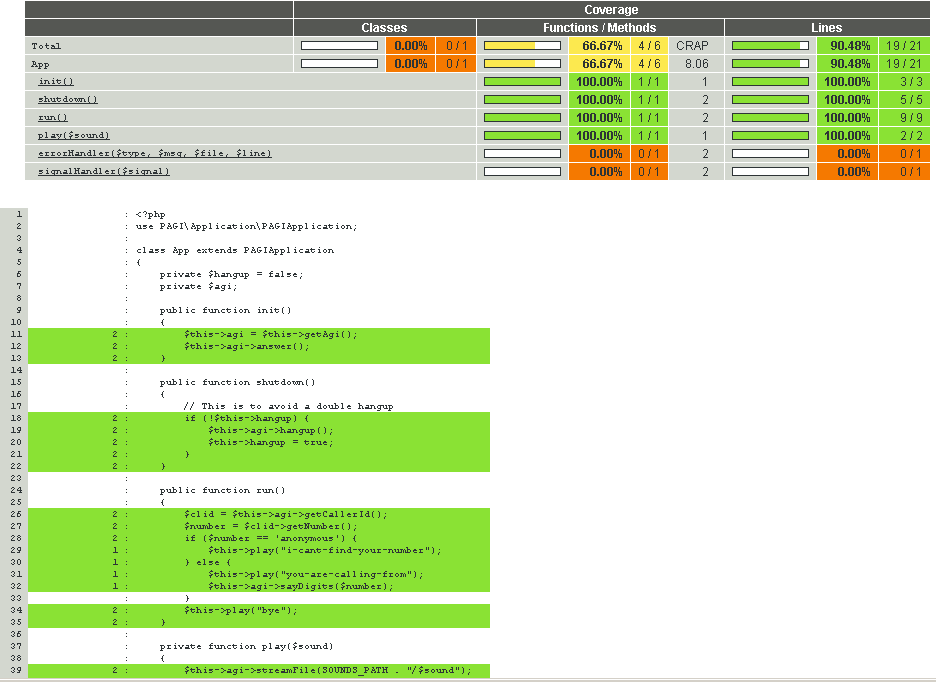

Unit test your PHP IVR applications with PAGI
Introduction
Since version 1.9.2, PAGI comes with a mock of a pagi client, suitable to be used in your own unit tests, so you can test your telephony applications, like IVRs. The idea behind the mocked client is to let you test the callflow side of your application, the user interaction and the exact sequence an ivr application should obey. Let's see how to use it.
The complete source code for this article is available at GitHub.
The target application
We're going to test a very basic PAGI application. If you dont have any experience using the PAGI client or writing a PAGIApplication, you can learn about them here.
When you access the ivr application, it should read back something like: "You are calling from 5555555, bye". If your caller id is anonymous, it will say "I cant find your number, bye".
- This is the source code for the IVR application
- This is the test class.
The test class has 2 tests, one for each of the use case scenarios (with and without an anonymous caller id).
Code coverage
Here's an example of the code coverage generated by phpunit:
How it works
The PAGI client implementation MockedClientImpl is what allow us to unit test our ivr, and assert things like sounds played, mock user input and agi results, etc.
The client extends AbstractClient so it's actually a full agi client behind the scenes. The trick is to run an actual agi client implementation (like ClientImpl or AsyncClientImpl) for production code, but use MockedClientImpl when testing.
Since we are testing a PAGIApplication here, which needs an IClient as a constructor argument, we can use that to pass a mocked client for our convenience.
If you have a container (like Ding), it is trivial to change one for another. If not, you will have to use different bootstraps (for tests and production), similar to what is shown in the example application, where there is a bootstrap for the application, but the unit tests use an instance of the mocked client.
With the mocked client, you can do 4 things:
- Call any standard IClient method, like answer(), hangup(), streamFile(), getData(), etc.
- Add a specific agi result string: These are used to generate the results when calling the standard IClient methods, like "200 result=1" in response to "ANSWER". These are used in order to reply to the agi commands issued by applications.
- Specify results for specific commands, like onDial(), onStreamFile(), etc. Exactly like above, but using this set of methods as factories for the result strings.
- Asserting of arguments when calling methods like dial(), streamFile(), etc.
Every time you call to a method of the mocked client (like answer(), getData(), hangup(), etc), a "result" is consumed. So with the 2nd and 3rd features of the above list, you add results to the client so they can be consumed when a mocked agi result is needed. These results need to be in order, the very same order in which the method calls are made.
Let's see how to use every one of those features. Suppose the following code:
$client->answer();
$client->streamFile('1');
$client->streamFile('2', '#');
$client->hangup();
In this case, the client will need to know how to respond to 4 agi commands: the answer, 2 stream file's, and 1 hangup. When the client doesn't have a configured response for a given command, a MockedException will be thrown. So you MUST specify an agi response for each one of the expected calls to the agi client.
Remember: There should be exactly 1 result available for every standard method call to the client. If there are more results than commands (method calls like answer(), hangup(), etc) or more commands than results, the mocked client will throw a MockedException accordingly (this check is done in the destructor of the mocked client).
So to specify the desired results for the agi commands, you can add customized agi results strings; or use the on* methods (like onDial(), onStreamFile(), etc). These methods can be seen as factories for those strings, and they will call addMockedResult() themselves to specify the expected result when calling the method. Some methods will not require you to specify the result, like setVariable(), consoleLog(), the methods in AsteriskLogger, etc.
Let's see how to specify an agi result string for every one of the expected agi commands, like:
$client->addMockedResult('200 result=0')
->addMockedResult('200 result=0 endpos=7000')
->addMockedResult('200 result=23 endpos=6123')
->addMockedResult('200 result=0');
This is exactly equivalent to:
$client->onAnswer(true)
->onStreamFile(false, '#', 7000)
->onStreamFile(true, '#', 6123)
->onHangup(true)
;
In the first case, we're literally forging our own responses, which is useful in certain cases if we want to test specific rare behaviour. However, the on* method calls should suffice in almost all situations. There should be a on* method for every "standard" pagi client method. Examples: record()-onRecord(), streamFile()-onStreamFile(), waitDigit()-onWaitDigit(), and so on.
So in the second example, we specify what will happen when the 1st agi command is issued (the call to answer()), then for the 1st and 2nd calls to streamFile() (which are the 2nd and 3rd agi commands), and the 1st call to hangup() (which is the 4th agi command). It is important to keep the order of calls, for example this test is not equivalent to the above ones because the order is different:
$client->onHangup(true)
->onStreamFile(true, '#', 6123)
->onStreamFile(false, '#', 7000)
->onAnswer(true)
;
The on* methods
Here's a list of the available on* methods. Some have arguments in common:
- $interrupted: boolean. If true, indicates that the operation should be emulated as interrupted by the user. For example, if a sound file is playing, emulate the user pressing a digit before the sound has ended. If false, emulate no input from the user.
- $digit: char. When $interrupted = true, this will hold the digit the user pressed.
- $success: boolean. If true, emulate a successfull operation. If false, emulate a failed operation.
- onGetOption($interrupted, $digit = '#', $offset = 1)
- onWaitDigit($interrupted, $digit = '#')
- onGetVariable($success, $value = '')
- onGetFullVariable($success, $value = '')
- onChannelStatus($status)
- onDial( $success, $peerName, $peerNumber, $answeredTime, $dialStatus, $dynamicFeatures )
- onRecord($interrupted, $hangup, $digit, $endpos)
- onGetData($interrupted, $digits = '#')
- onSayDateTime($interrupted, $digit = '#')
- onSayDate($interrupted, $digit = '#')
- onSayDigits($interrupted, $digit = '#')
- onSayPhonetic($interrupted, $digit = '#')
- onSayAlpha($interrupted, $digit = '#')
- onAnswer($success)
- onHangup($success)
Asserting Arguments
Up to now we've seen how to assert what the ivr does (does it answer? when does it play a sound file? when will it hangup? is it playing a sound file is the user pressed 1?). Let's see now how to assert how it does it.
Let's go back to the earlier code and test, adding the assert() calls:
$client
->assert('streamFile', array('1'))
->assert('streamFile', array('2', '#'))
->onAnswer(true)
->onStreamFile(false)
->onStreamFile(true, '#')
->onHangup(true)
;
$client->answer();
$client->streamFile('1');
$client->streamFile('2', '#');
$client->hangup();
In this way we're adding 2 more checks, that will assert that the 1st call to streamFile() will contain exactly 1 argument that is a string and should be '1'. Then, when the second call arrives, it should be done with 2 arguments: the strings '2' and '#'.
The assert method accepts the name of the target method as the 1st argument, and then array with the arguments to be checked. You can put the assert()s anywhere you like, even mixed with the on* method calls. The order only matters when you have multiple calls to the same method, like in the example that has 2 calls to streamFile(). The first assert() appearance will refer to the 1st streamFile() call and the next one, to the 2nd.
Conclusion
So there is now a way to test php ivr applications more easily. You can test the user interaction and your call flows directly with PAGI, and mix it with a little phpunit to test the business side of the application. Of course this has to evolve to something more sophisticated, but still, it's very useful.